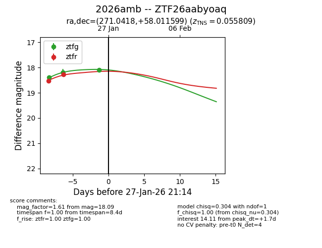
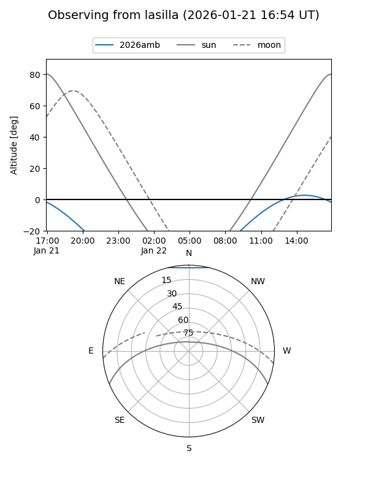
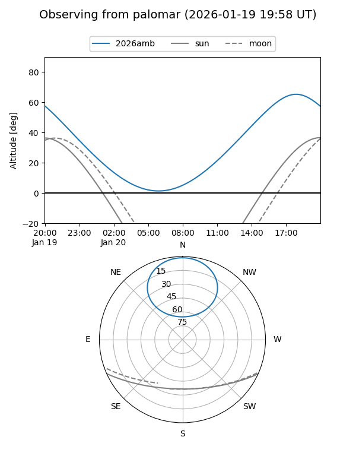
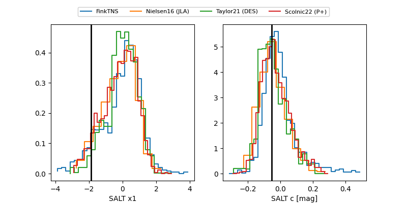

2026amb
Target 2026amb at 2026-01-28 00:06
Aliases and brokers:
FINK: link
Lasair: link
ALeRCE: link
TNS: link
YSE: link
alt names
ZTF26aabyoaq (ztf,fink_ztf)
2026amb (tns,yse)
Coordinates:
equatorial (ra, dec) = 271.0418,+58.01160
equatorial (HMS+DMS) = 18:04:10.03,+58:00:41.76
galactic (l, b) = (86.6125,+28.90122)
Flags:
confirmed ia
Photometry:
last ztfg=18.09, ztfr=18.27
3 ztfg, 2 ztfr detections
Lightcurve

Visibility


Additional plots
